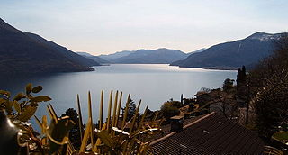

Il lago Maggiore è un lago prealpino di origine fluvioglaciale, il secondo per superficie in Italia. Il suo nome "Maggiore" deriva dal fatto che un tempo si riteneva il più esteso dei laghi prealpini. Il lago Maggiore si trova ad un'altezza di circa 193 m s.l.m., la sua superficie è di 212 km di cui circa l'80% è situata in territorio italiano e il rimanente 20% in territorio svizzero. Ha un perimetro di 170 km e una lunghezza di 64,37 km (la maggiore tra i laghi italiani); la larghezza massima è di 10 km e quella media di 3,9 km.
Il lago visto da sopra Brissago (Svizzera)
Il Lago Maggiore è caratterizzato da inverni freddi, ma più miti rispetto all'entroterra, e moderatamente nevosi (con accumuli medi di 10 cm per ogni nevicata e talvolta anche superiori ai 30 cm fino ad un massimo di 50 cm), le estati sono moderatamente calde umide e temporalesche, la temperatura media di gennaio si attesta sui 2 gradi centigradi, con punte di 3 gradi sul versante settentrionale del golfo Borromeo, le temperature notturne possono scendere sotto lo 0, fino a -10, ma molto raramente scendere sotto tale valore. In estate le temperature medie si attestano attorno ai 22 gradi centigradi, con punte diurne che raramente superano i 32 gradi.
Tra i luoghi caratteristici ricordiamo il Mottarone, conosciuto anche come "Montagna dei due laghi" per la sua particolare posizione tra Lago d'Orta e Lago Maggiore, è il più alto rilievo del Vergante. Dalla sua vetta, che in inverno si trasforma in una frequentata stazione sciistica, si gode uno dei più bei panorami sulle Alpi centro occidentali, sulla Pianura lombardo-piemontese e su sette laghi (Maggiore, Orta, Mergozzo, Varese, Comabbio, Monate e Biandronno).

La vetta di Mottarone
Il Lago Maggiore dista circa 35 km dal centro storico di Novara e circa 50 km da Vercelli.
Torna alla pagina principale